Approximating nonlinear functions
This tutorial was generated using Literate.jl. Download the source as a .jl file.
This tutorial explains how to approximate nonlinear functions within a mixed-integer linear program using outer approximation, inner (convex combination) approximation, and SOS2-enforced piecewise linear approximation. Each approach applies under different convexity assumptions and optimisation directions.
Learning intentions:
- Approximate a nonlinear function within an LP using tangent-plane (outer) constraints, and recognize when this is valid based on convexity and optimisation direction
- Build an inner (convex combination) approximation using auxiliary weight variables, and understand why it fails for non-convex functions
- Add an
SOS2constraint on the weight vector to enforce a true piecewise linear approximation for non-convex functions
Required packages
This tutorial uses the following packages:
using JuMPimport HiGHSimport PlotsMinimizing a convex function (outer approximation)
If the function you are approximating is convex, and you want to minimize "down" onto it, then you can use an outer approximation.
For example, $f(x) = x^2$ is a convex function:
f(x) = x^2∇f(x) = 2 * xplot = Plots.plot(f, -2:0.01:2; ylims = (-0.5, 4), label = false, width = 3)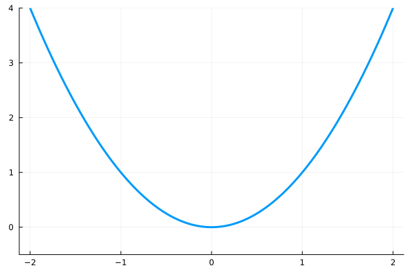
Because $f$ is convex, we know that for any $x_k$, we have: $f(x) \ge f(x_k) + \nabla f(x_k) \cdot (x - x_k)$
for x_k in -2:1:2 ## Tip: try changing the number of points x_k g = x -> f(x_k) + ∇f(x_k) * (x - x_k) Plots.plot!(plot, g, -2:0.01:2; color = :red, label = false, width = 3)endplot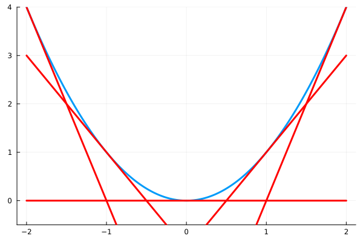
We can use these tangent planes as constraints in our model to create an outer approximation of the function. As we add more planes, the error between the true function and the piecewise linear outer approximation decreases.
Here is the model in JuMP:
function outer_approximate_x_squared(x̄) f(x) = x^2 ∇f(x) = 2x model = Model(HiGHS.Optimizer) set_silent(model) @variable(model, -2 <= x <= 2) @variable(model, y) # Tip: try changing the number of points x_k @constraint(model, [x_k in -2:1:2], y >= f(x_k) + ∇f(x_k) * (x - x_k)) @objective(model, Min, y) @constraint(model, x == x̄) # <-- a trivial constraint just for testing. optimize!(model) assert_is_solved_and_feasible(model) return value(y)endouter_approximate_x_squared (generic function with 1 method)Here are a few values:
for x̄ in range(; start = -2, stop = 2, length = 15) ȳ = outer_approximate_x_squared(x̄) Plots.scatter!(plot, [x̄], [ȳ]; label = false, color = :black)endplot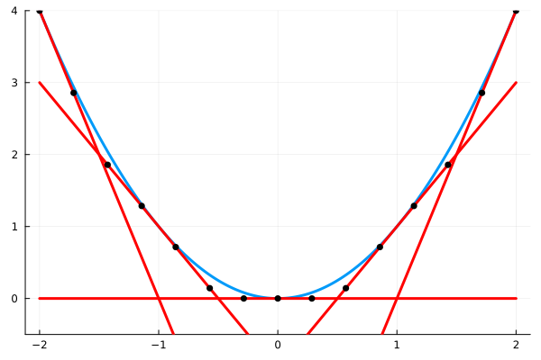
Maximizing a concave function (outer approximation)
The outer approximation also works if we want to maximize "up" into a concave function.
f(x) = log(x)∇f(x) = 1 / xX = 0.1:0.1:1.6plot = Plots.plot( f, X; xlims = (0.1, 1.6), ylims = (-3, log(1.6)), label = false, width = 3,)for x_k in 0.1:0.5:1.6 ## Tip: try changing the number of points x_k g = x -> f(x_k) + ∇f(x_k) * (x - x_k) Plots.plot!(plot, g, X; color = :red, label = false, width = 3)endplot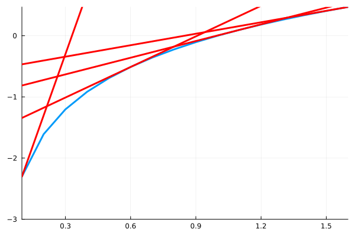
Here is the model in JuMP:
function outer_approximate_log(x̄) f(x) = log(x) ∇f(x) = 1 / x model = Model(HiGHS.Optimizer) set_silent(model) @variable(model, 0.1 <= x <= 1.6) @variable(model, y) # Tip: try changing the number of points x_k @constraint(model, [x_k in 0.1:0.5:2], y <= f(x_k) + ∇f(x_k) * (x - x_k)) @objective(model, Max, y) @constraint(model, x == x̄) # <-- a trivial constraint just for testing. optimize!(model) assert_is_solved_and_feasible(model) return value(y)endouter_approximate_log (generic function with 1 method)Here are a few values:
for x̄ in range(; start = 0.1, stop = 1.6, length = 15) ȳ = outer_approximate_log(x̄) Plots.scatter!(plot, [x̄], [ȳ]; label = false, color = :black)endplot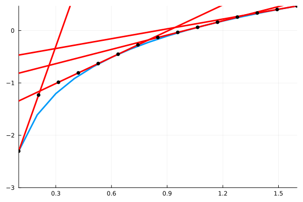
Minimizing a convex function (inner approximation)
Instead of creating an outer approximation, we can also create an inner approximation. For example, given $f(x) = x^2$, we may want to approximate the true function by the red piecewise linear function:
f(x) = x^2x̂ = -2:0.8:2 ## Tip: try changing the number of points in x̂plot = Plots.plot(f, -2:0.01:2; ylims = (-0.5, 4), label = false, linewidth = 3)Plots.plot!(plot, f, x̂; label = false, color = :red, linewidth = 3)plot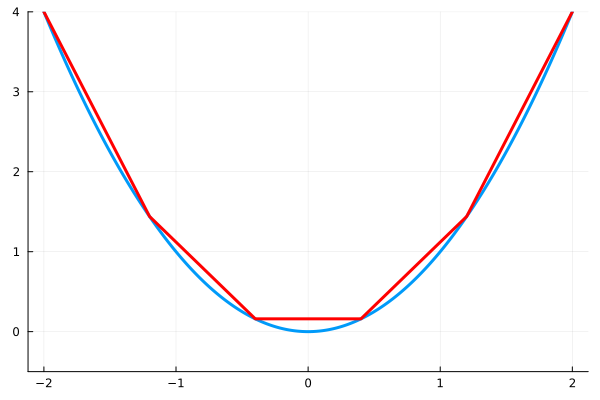
To do so, we represent the decision variables $(x, y)$ by the convex combination of a set of discrete points $\{x_k, y_k\}_{k=1}^K$:
\[\begin{aligned} x = \sum\limits_{k=1}^K \lambda_k x_k \\ y = \sum\limits_{k=1}^K \lambda_k y_k \\ \sum\limits_{k=1}^K \lambda_k = 1 \\ \lambda_k \ge 0, k=1,\ldots,k \\ \end{aligned}\]
The feasible region of the convex combination actually allows any $(x, y)$ point inside this shaded region:
I = [1, 2, 3, 4, 5, 6, 1]Plots.plot!(x̂[I], f.(x̂[I]); fill = (0, 0, "#f004"), width = 0, label = false)plot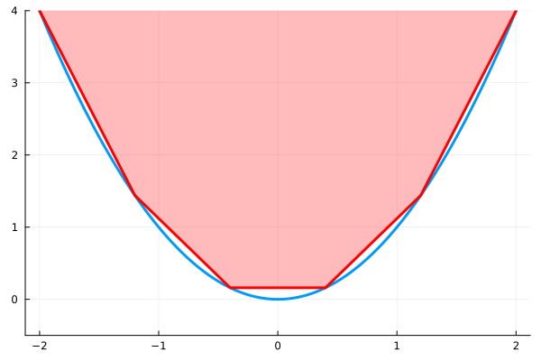
Thus, this formulation does not work if we want to maximize $y$.
Here is the model in JuMP:
function inner_approximate_x_squared(x̄) f(x) = x^2 ∇f(x) = 2x x̂ = -2:0.8:2 ## Tip: try changing the number of points in x̂ ŷ = f.(x̂) n = length(x̂) model = Model(HiGHS.Optimizer) set_silent(model) @variable(model, -2 <= x <= 2) @variable(model, y) @variable(model, 0 <= λ[1:n] <= 1) @constraint(model, x == sum(λ[i] * x̂[i] for i in 1:n)) @constraint(model, y == sum(λ[i] * ŷ[i] for i in 1:n)) @constraint(model, sum(λ) == 1) @objective(model, Min, y) @constraint(model, x == x̄) # <-- a trivial constraint just for testing. optimize!(model) assert_is_solved_and_feasible(model) return value(y)endinner_approximate_x_squared (generic function with 1 method)Here are a few values:
for x̄ in range(; start = -2, stop = 2, length = 15) ȳ = inner_approximate_x_squared(x̄) Plots.scatter!(plot, [x̄], [ȳ]; label = false, color = :black)endplot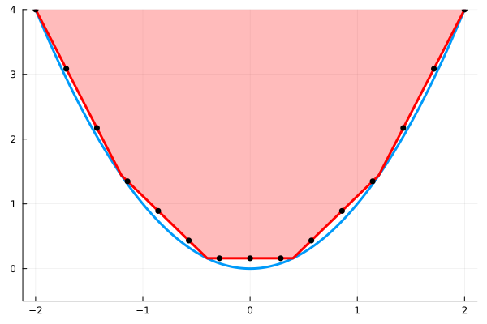
Maximizing a concave function (inner approximation)
The inner approximation also works if we want to maximize "up" into a concave function.
f(x) = log(x)x̂ = 0.1:0.5:1.6 ## Tip: try changing the number of points in x̂plot = Plots.plot(f, 0.1:0.01:1.6; label = false, linewidth = 3)Plots.plot!(x̂, f.(x̂); linewidth = 3, color = :red, label = false)I = [1, 2, 3, 4, 1]Plots.plot!(x̂[I], f.(x̂[I]); fill = (0, 0, "#f004"), width = 0, label = false)plot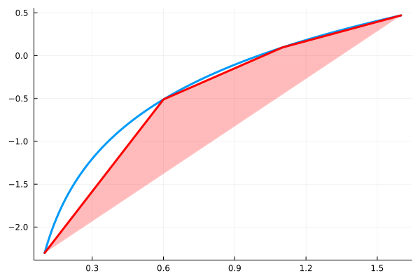
Here is the model in JuMP:
function inner_approximate_log(x̄) f(x) = log(x) x̂ = 0.1:0.5:1.6 ## Tip: try changing the number of points in x̂ ŷ = f.(x̂) n = length(x̂) model = Model(HiGHS.Optimizer) set_silent(model) @variable(model, 0.1 <= x <= 1.6) @variable(model, y) @variable(model, 0 <= λ[1:n] <= 1) @constraint(model, sum(λ) == 1) @constraint(model, x == sum(λ[i] * x̂[i] for i in 1:n)) @constraint(model, y == sum(λ[i] * ŷ[i] for i in 1:n)) @objective(model, Max, y) @constraint(model, x == x̄) # <-- a trivial constraint just for testing. optimize!(model) assert_is_solved_and_feasible(model) return value(y)endinner_approximate_log (generic function with 1 method)Here are a few values:
for x̄ in range(; start = 0.1, stop = 1.6, length = 15) ȳ = inner_approximate_log(x̄) Plots.scatter!(plot, [x̄], [ȳ]; label = false, color = :black)endplot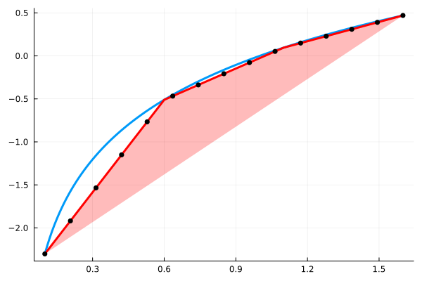
Piecewise linear approximation
If the model is non-convex (or non-concave), then we cannot use an outer approximation, and the inner approximation allows a solution far from the true function. For example, for $f(x) = sin(x)$, we have:
f(x) = sin(x)plot = Plots.plot(f, 0:0.01:2π; label = false)x̂ = range(; start = 0, stop = 2π, length = 7)Plots.plot!(x̂, f.(x̂); linewidth = 3, color = :red, label = false)I = [1, 5, 6, 7, 3, 2, 1]Plots.plot!(x̂[I], f.(x̂[I]); fill = (0, 0, "#f004"), width = 0, label = false)plot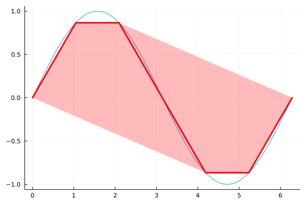
We can force the inner approximation to stay on the red line by adding the constraint λ in SOS2(). The SOS2 set is a Special Ordered Set of Type 2, and it ensures that at most two elements of λ can be non-zero, and if they are, that they must be adjacent. This prevents the model from taking a convex combination of points 1 and 5 to end up on the lower boundary of the shaded red area.
Here is the model in JuMP:
function piecewise_linear_sin(x̄) f(x) = sin(x) # Tip: try changing the number of points in x̂ x̂ = range(; start = 0, stop = 2π, length = 7) ŷ = f.(x̂) n = length(x̂) model = Model(HiGHS.Optimizer) set_silent(model) @variable(model, 0 <= x <= 2π) @variable(model, y) @variable(model, 0 <= λ[1:n] <= 1) @constraints(model, begin x == sum(λ[i] * x̂[i] for i in 1:n) y == sum(λ[i] * ŷ[i] for i in 1:n) sum(λ) == 1 λ in SOS2() # <-- this is new end) @constraint(model, x == x̄) # <-- a trivial constraint just for testing. optimize!(model) assert_is_solved_and_feasible(model) return value(y)endpiecewise_linear_sin (generic function with 1 method)Here are a few values:
for x̄ in range(; start = 0, stop = 2π, length = 15) ȳ = piecewise_linear_sin(x̄) Plots.scatter!(plot, [x̄], [ȳ]; label = false, color = :black)endplot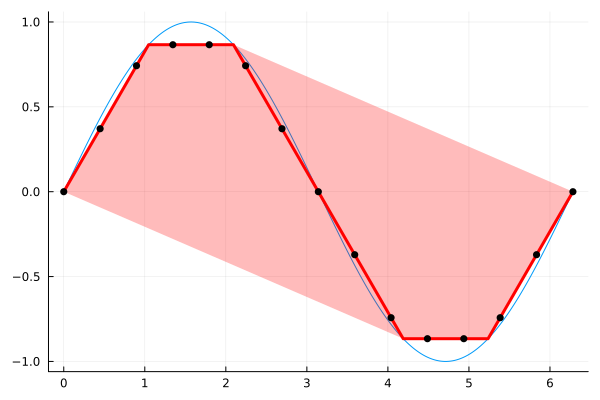